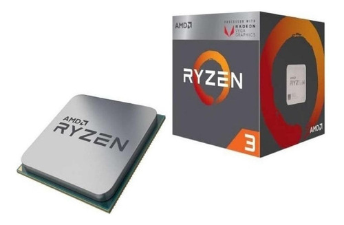

Bem vindo
quer saber o por que damos as melhores dicas de periféricos e componentes para o seu computador? Confira abaixo.
Uma das maiores duvidas que o publico tem em relação a componentes eletrônicos é sobre qual comprar, e com isso decidimos fazer
este site com o intuito de te apresentar as melhores opções do mercado.
Com o aumento na demanda e poucos recursos sabemos hoje que o mercado de hardware se encontra
em um dos seus momentos mais caros do mercado, ainda mais quando vai se pensar em placa de vídeo em sí.
Para ficar atento aos melhores preços faça seu cadastro clickando em "Cadastro" e caso já o tenha logue
na nossa página no canto superior direito, iremos também estar enviando notícias no seu email cadastrado e enviando cupons de desconto.
Confira na aba "Produtos" para ver o preço mais em conta do mercado e garantir que o que você precisa estará nas suas mãos o mais rápido possível
Dicas

Um dos processadores mais baratos dando em conta seu custo benefício é esse,
há varias placas no mercado boas também que são compatíveis com AM4 da AMD para o utilizar